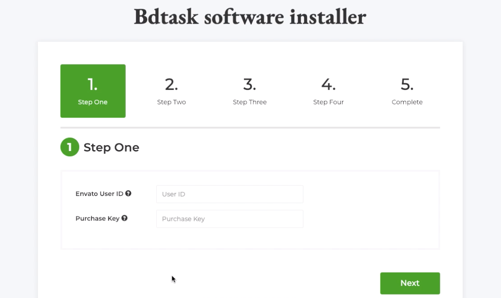
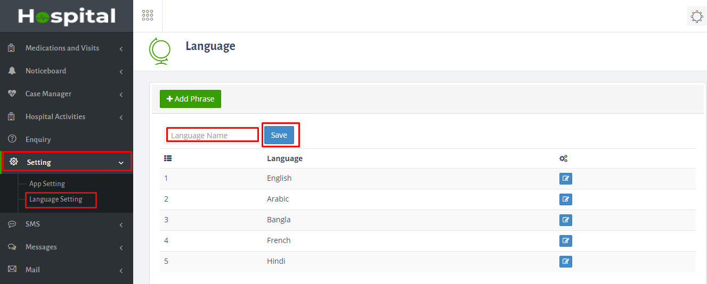
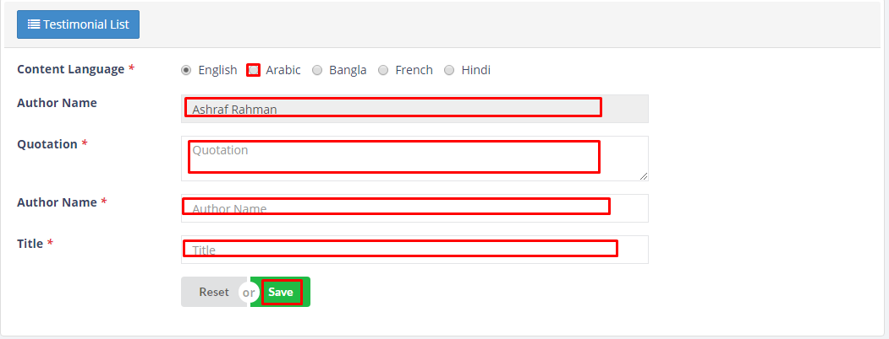
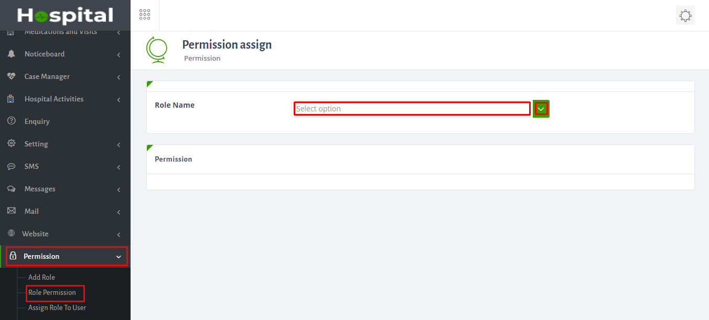
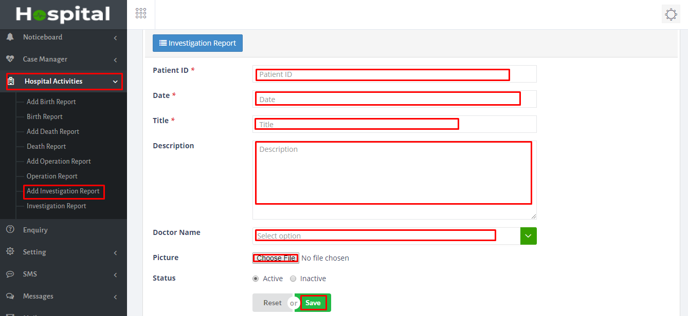
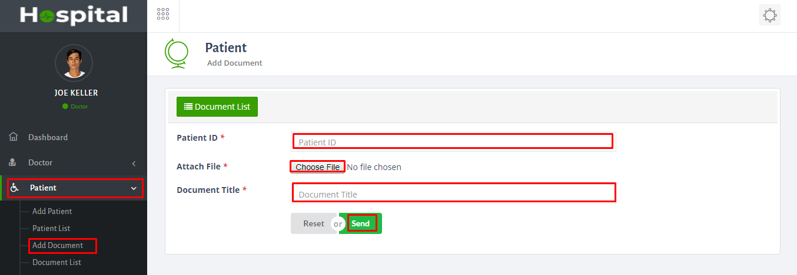

Hospital Automanager | Advance Hospital Management System Software
Hospital Automanager is the best and number one Hospital Management System SOftware with Website.It has 40+ Features what you need to manage Hospital.Here has Insurance, Modern Billing System and SMS Gateway also.It is developed by Codeigniter Framework.
Demo of Hospital AutoManager
Table of Content
- Installation Guideline
- Super Admin Panel Part
- Doctor Panel Part
- Patient Part
- Admin Dashboard
- Admin Settings
- Language Settings
- Website setttings
- Add Department
- Add Doctor
- Add Insurance
- Billing Section
- Human Resource
- Role Permission
- Case Manager
- Hospital Activities
- Doctor Panel Dashboard
- Add New Patient
- Add Schedule
- Add Appointment
- Pharmacy
- Prescription System
- Notice
- SMS
- Message
- Appointment part
- Patient Document Upload
- Frontend Login from website
- Prescription View
- Status
> Mysql Version : 5.0.12 > PHP version: 7.0.5 > Apache : 2.4.18
Hospital_Automanager Installation Guide:
- Please Extract the Hospital_Automanager-main.zip folder. Then you will get Hospital_Automanager-v.1.0-main.zip and Documentation Folder, First read the documentation.
- Now just Upload the Hospital_Automanager-v.1.0-main.zip file to your server using cPanel or FTP.
- Extract the Hospital_Automanager-v.1.0-main.zip file
- Now you just access into the your uploaded folder and then move all folders and files (EX: application, assets,index.php,install and system folders) one step up to public_html directory or can create comment folder and then you can keep it at the folder . Note: Keep in mind about .htaccess file is moved correctly otherwise you cannot access into the admin panel. #####################
- Note that: the instruction will be applicable for all other system. #####################
- Now, Browse your application http://yourdomain.com/install If all requirements successfully meet then click on Next button.And also check Purchase key at your envato Download option : https://themeforest.net/downloads 
- Installer second step showing the directory and server requirements.and SMTP server.Try to make everything ok,initially SMTP if not enable it will work but for email sending you must setup your serer later otherwise email will not delivere.But you can install the application now.
- *Enter your database name, username, password, host name and click on Next button
- Then wait for 20 Second.
- Now add your own User name and password to login in the system.After login please change the user name and password.
- Installation successfully done…
- Now, Click on Click to launch your application button to access your application
- Thank you for purchasing the Hospital Automanager System, If you have any questions, please contact us at info@bdtask.com


User Guide:
- First you can see admin panel dashboard.Here you can see appoinment,patient,prescription,doctor,free bed list and discharged.You can see the screenshot here:
- To set up please go to setting>click app setting>here give application title,address,email address,phone no,choose favicon,logo and select language,time-zone,website-align>then finally click save.Please see the screenshot below:
- To set up language go to setting>click language setting>Here give your own language>and then click save.
- To add service go to website>click add service>here you will see a list which was added before.You can edit,delete previous one and also add new one.For adding new one click add service.Here fill up the option and also if you want to see it in all language which you add then you have to save it in all language>finally click save.please see the screenshot below:
- To add section go to website>click add section>here you will see a list which was added before.You can edit,delete previous one and also add new one.For adding new one click add section.Here fill up the option and also if you want to see it in all language which you add then you have to save it in all language>finally click save.please see the screenshot below:
- To add news go to website>click add news>here you will see a list which was added before.You can edit,delete previous one and also add new one.For adding new one click add news.Here fill up the option and also if you want to see it in all language which you add then you have to save it in all language>finally click save.please see the screenshot below:
- To set up language for add-news please see the screenshot below.Here you have set news in every language.
- To set up partner please go to website>click add partner>Here you can edit,delete and also add new one.For adding new one please click add partner>Here fill up the option name,url,choose logo and select status.Please see the screenshot below:
- To add appoinment go to website>click add appoinment>here you will see a list which was added before.You can edit,delete previous one and also add new one.For adding new one click add news.Here fill up the option and also if you want to see it in all language which you add then you have to save it in all language>finally click save.please see the screenshot below:
- To add testimonial please follow the steps which i have marked in my screenshot:
- To add slider go to website>click slider>here you will see a list which was added before.You can edit,delete previous one and also add new one.For adding new one click add news.Here fill up the option and also if you want to see it in all language which you add then you have to save it in all language>finally click save.please see the screenshot below:
- To set up slider language please follow the steps which i have marked in my screenshot:
- To add about go to website>click about>Here you can edit,delete previous one.
- To add and assign template please see the screenshot below:
- For adding menu please see the screenshot below:
- For setting please go to website>click setting>Here you can edit and delete and also add new one.Please see the screenshot below and follow the steps:
- Here you can add department.Go to department>click add department>here fill up the form>and finally click save.
- How you can see the department list please see the screenshot below.Here you can delete,edit and also you can add.After adding you have to all language for single department.Otherwise you can't see it in different language in the website.
- To add main department go to department>click main department>here you can edit and delete previous one and also add new one.For adding click option add main department>Here fill up the required option>finally click create.In 2nd screenshot you have add language for main department.
- To add doctor please go to doctor>click add doctor>Here fill up the required option>finally click save.
- To see the doctor list please see the screenshot.Here you can edit,delete and add new doctor.
- To add portfolio please follow the steps of my screenshot.
- To add language in doctor part please follow the rules which i have marked in my screenshot:
- To add insurance go to insurance>click add insurance>here fill up the option>and finally click save.
- To add limit approval please go to insurance>click add limit approval>Here fill up the required option>then finally click save.
- To add service go to billing>click add service>here fill up the option>then finally click save.
- To add Package go to billing>click add package>here fill up the option>then finally click save.
- To add patient admission go to billing>click add patient admission>here fill up the required option>then finally click save.
- To see patient admission list go to billing>click patient admission list>here you can see the list.Also you can add advance payment,bill and patient medication.
- For adding advance payment go to billing>click advance payment>here fill up the required option>then finally click save.
- For adding bill go to billing>click bill>here fill up the required option>then finally click save.
- To add employee go to human resources>click add employee>fill up the required option>finally click save.Please follow the screenshot steps below:
- To see employee list go to human resources>click employee list>Here you can add,edit,delete and view the employee.Also you have to add language here.
- To add role please follow the screenshot below:
- After adding role you have to give permit for role.Follow the steps which i have marked in my screenshot:
- To assign role permission plase follow the screenshot:
- From case manager you can add patient.For this go to case manager>click add patient>and finally click save.
- To add birth report go to hospital activities>click add birth report>here fill up the options>then click save.
- To see the birth report list please see the screenshot below:
- To add death report go to hospital activities>click add death report>here fill up the options>then click save.
- To add operation report please see the screenshot below:
- To add investigation report please see the screenshot below:
- Here you can see the doctor admin panel.Doctor can see the appoinment,patient,prescription.
- Here doctor can add patient.Please see the screenshot below:
- Doctor can add patient document here.See the screenshot below:
- Doctor can add time-slot which time they can visit patient.
- Here doctor can add schedule.Please see the screenshot below:
- Here doctor can add appoinment.Follow the screenshot steps below:
- Here doctor can see medicine category list.
- Here doctor can see medicine list.
- Here doctor can add patient case study.See the screenshot below:
- Doctor can add prescription here.Please follow the screenshot steps:
- Doctor can see the notice-list.
- Doctor can send the message here.Then the patient will receive the message.From there they can reply and also ask doctor any ques.After doctor can reply from here.
- Here doctor can send new message.
- Here is the patient panel.Here patient can add their own appoinment with.Please see the screenshot below:
- Here patient can add their document.
- For patient login please see the screenshot here.
Admin Panel




Doctor Panel


Patient Panel

Bdtask Overview
Bdtask is a Well known company. It is a Software development and envato based Company. It has 40 Plus Dedicated employees working for Customer satisfaction.Please visit our company website: Bdtask
What Files are included with Hospital_Automanager
HTML
CSS
JS
PHP
Codeigniter Framework
MYSQL
Full Documentation
Installer
Licensing
Hospital_Automanager_main.Zip
Update log txt
Requirements for Hospital_Automanager
In this section we will present the recommended configuration under which the theme would work perfectly. Those are not absolute values, the theme performance depends on many factors like the host performance, server configuration and the number of visitors.
Server requirements
Apache or IIS or Nginx
PHP version 5.3 or greater (recommended: PHP 5.4 or greater)
MySQL version 5.0 or greater (recommended: MySQL 5.5 or greater)
Hosting requirements
Hosting actually depend on your Users. You have to calculate how much visitor you are getting every day. If you have more than 10,000 visitor everyday then we will recomend you to Buy a VPS from any reputed hosting company. We Will prefer Bluehost company.Because they are providing very quick service.
Hospital_Automanager Support
If you Need to know anything about Hospital_Automanager please do not hesitate to ask our support team.
Support E-mail : info@bdtask.com
Support Skype : bdtask
Purchase now
Once again, thank you so much for purchasing this system. As I said at the beginning, I'd be glad to help you if you have any questions relating to this theme. No guarantees, but I'll do my best to assist. If you have a more general question relating to the themes on ThemeForest, you might consider visiting the forums and asking your question in the "Item Discussion" section.